第一子在天元，第二子在天元為中心的３X３區域內，第三子在中天為中心的５X５區域內。
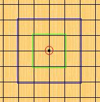
開局名稱，以第二子的下法分開直接及間接開局
日本將這２６開局各自命名，１和３在同一線或者對角線上，中間隔著一格為星，其餘為月，英文則以Ｄ和Ｉ加上數字來稱呼
| 直接開局 | |||||
| 寒星 D1 |
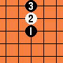 |
溪月 D2 |
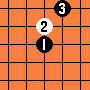 |
疏星 D3 |
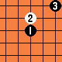 |
| 花月 D4 |
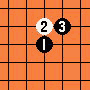 |
殘月 D5 |
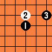 |
雨月 D6 |
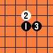 |
| 金星 D7 |
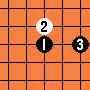 |
松月 D8 |
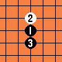 |
丘月 D9 |
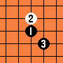 |
| 新月 D10 |
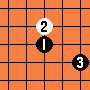 |
瑞星 D11 |
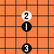 |
山月 D12 |
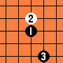 |
| 游星 D13 |
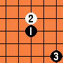 |
||||
| 間接開局 | |||||
| 長星 I1 |
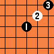 |
峽月 I2 |
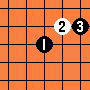 |
恆星 I3 |
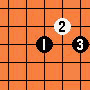 |
| 水月 I4 |
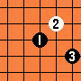 |
流星 I5 |
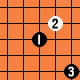 |
雲月 I6 |
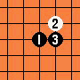 |
| 浦月 I7 |
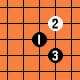 |
嵐月 I8 |
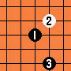 |
銀月 I9 |
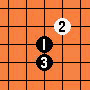 |
| 明星 I10 |
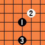 |
斜月 I11 |
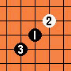 |
名月 I12 |
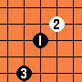 |
| 彗星 I13 |
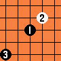 |
||||
┼┼１２３４ ┼┼┼┼┼┼一
┼┼┼┼┼５ ┼┼┼┼┼┼二
┼┼○┼┼６ ┼┼┼┼○┼三
┼┼●┼┼７ ┼┼┼●┼┼四
┼┼┼┼┼８ ┼┼┼┼┼┼五
┼┼┼┼┼９ ┼┼┼┼┼┼六
┼┼ａｂｃｄ 七八九ＡＢＣＤ
１：大寒星 一：大長星
２：大溪月 二：外峽月
３：外溪月 三：大峽月
４：大疏星 四：大恒星
５：外殘月 五：大水月
６：大殘月 六：外水月
７：大金星 七：大彗星
８：大新月 八：外名月
９：外新月 九：大名月
ａ：大瑞星 Ａ：大明星
ｂ：大山月 Ｂ：大嵐月
ｃ：外山月 Ｃ：外嵐月
ｄ：大游星 Ｄ：大流星
中國的五子棋研究群組＂疏星閣＂，有在網路上大方分享研究成果
疏星閣開局指南
圍棋知名程式Crazy Stone跨界提供的五子棋定石庫
Crazy Stone連珠定石